白明
兰州大学第一医院院长｜心血管介入主任医师、教授
内部判断 “技术出身的战略型院长”。兼具介入术者与省级卫生政策参与者身份。决策兼看临床先进性与循证证据、省域影响力、医保控费，以及可复制的政策价值。不是买设备的人，是搭体系、要话语权的人。
- 对话入口
- 临床价值与循证证据
- 方案框架
- 省域医共体的心血管旗舰落点
- 统一口径
- 共建省域智慧心脏中心

把人物、战略、决策动机、沟通方式与项目影响网络放在一页内对齐
兰州大学第一医院院长｜心血管介入主任医师、教授
内部判断 “技术出身的战略型院长”。兼具介入术者与省级卫生政策参与者身份。决策兼看临床先进性与循证证据、省域影响力、医保控费，以及可复制的政策价值。不是买设备的人，是搭体系、要话语权的人。
决策热键｜省域影响力与政策能进入政协建言、形成“甘肃模式”并获上级认可的方案，内部判断权重较高。
决策热键｜学术与临床领先他首先是术者。超低辐射／造影剂、多模态导航和复杂介入证据链优先于商业话术。
决策热键｜可持续与控费辐射／造影剂下降、医保效率和可量化 ROI，回应其“绿色智慧医院”主张。